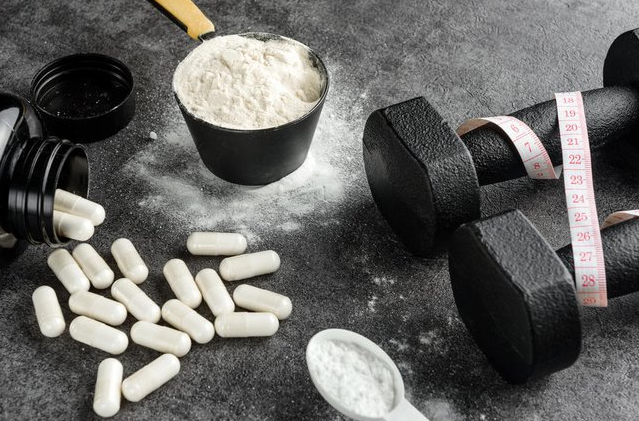

A redução da massa gorda é um objetivo comum para muitas pessoas que buscam melhorar sua composição corporal e saúde. A literatura sobre a combinação de treinamento resistido, creatina e proteína em relação à redução da massa gorda pode ser variada, com estudos fornecendo resultados diversos. No entanto, um estudo específico mostrou uma redução significativa na massa gorda em grupos que combinaram creatina, proteína e treinamento resistido, bem como aqueles que apenas realizaram o treinamento.
Treino de força, também conhecido como treino resistido, consiste em realizar exercícios com repetições utilizando cargas máximas. O objetivo é executar poucas repetições com cargas elevadas para promover um aumento significativo na força muscular e estimular as fibras brancas, também chamadas de fibras de contração rápida. Dessa forma, o treino de força busca otimizar o desenvolvimento da força muscular, priorizando a capacidade de levantar cargas mais pesadas em um número reduzido de repetições. Isso contribui para a ativação das fibras musculares de contração rápida, que são responsáveis pela produção de força em curtos períodos de tempo.
Ao incorporar esse tipo de treinamento, é possível obter benefícios como o aumento da massa muscular, aprimoramento da resistência e, principalmente, o fortalecimento das fibras musculares que respondem de maneira mais eficaz a cargas intensas. Em resumo, o treino de força busca maximizar a capacidade do corpo em lidar com cargas elevadas, promovendo ganhos expressivos na força muscular e estimulando as fibras de contração rápida. A redução da massa gorda é um objetivo comum para muitas pessoas que buscam melhorar sua composição corporal e saúde. A literatura sobre a combinação de treinamento resistido com creatina em relação à redução da massa gorda, ganho de massa magra e força pode ser variada, com estudos fornecendo resultados diversos, mas em ampla maioria com valores muito positivos. Em um dos estudos mostrou uma perda significativamente maior de gordura e um amplo ganho de força a grupos que combinaram creatina e treinamento resistido comparado bem como aqueles que apenas realizaram o treinamento sem a utilização do conjunto. A creatina somada com o treino resistido está associada ao aumento da força e da massa muscular, e o treinamento de força é uma estratégia eficaz para alcançar esses objetivos. A creatina é reconhecida por melhorar a capacidade de desempenho em exercícios de alta intensidade, resultando em ganhos da força e crescimento muscular. O treinamento resistido, é essencial para atingir metas de foco em ganho de força, Portanto, combinar a creatina com o treinamento resistido é uma abordagem eficaz para maximizar esses efeitos.